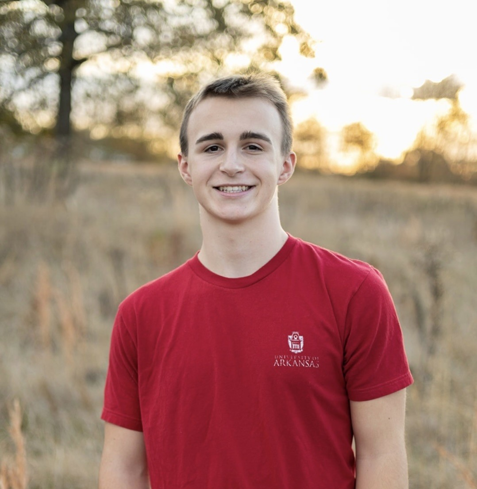

Reid Banks
I'm an Industrial Engineering and Operations Analytics student at the University of Arkansas. I'm also a member of Army ROTC, where I'm building the leadership and management skills I'll need to serve as a military officer. After I graduate and commission, I plan to pursue a career in operations analytics.